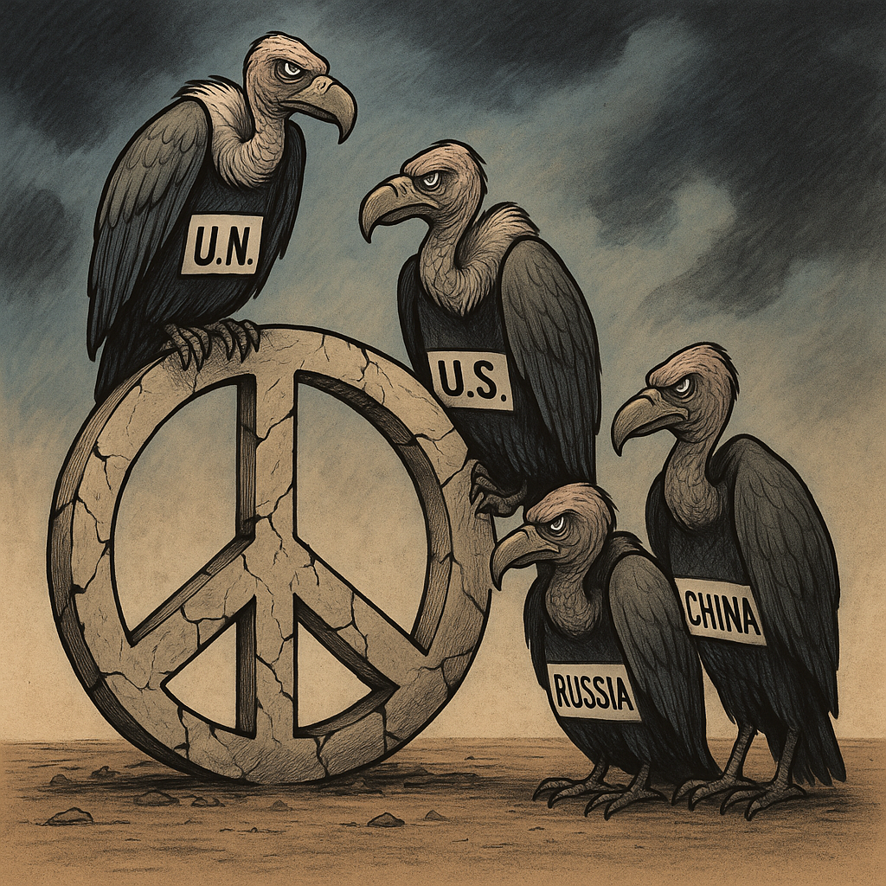

Publicado em 2025-04-24 09:33:22
Trump começa a recuar. As suas tarifas, anunciadas com a arrogância típica de um negociante de feira, revelam agora os efeitos perversos sobre o próprio mercado global. A retórica do “America First” colide com a realidade de uma economia interdependente, e até aliados internos, como Elon Musk, começam a sentir na pele os custos de alinharem com o populismo cego.
Mas o problema não é só Trump. É o que ele representa: o desmantelamento progressivo da diplomacia americana, o abandono dos aliados europeus, a perversão das alianças estratégicas. Os EUA tornaram-se um país fragilizado, onde o sistema de freios e contrapesos parece encostado à parede, sem fôlego nem coragem.
A amizade com Putin é o retrato final dessa decadência. A América, que outrora liderava o mundo livre, estende hoje a mão a um estado pária governado por um assassino em série, psicopata frio e megalómano. Putin continua, todos os dias, a assassinar civis ucranianos, a bombardear infraestruturas, a anexar território soberano como se fosse um jogo de tabuleiro — e o mundo responde com... reuniões.
A ONU é uma sombra cerimonial. A NATO, uma figura simbólica com músculos atrofiados. A diplomacia transformou-se num teatro de palavras, onde se fala muito e se faz pouco. E enquanto isso, a China observa, aplaude em silêncio, avança com paciência estratégica. A Coreia do Norte testa mísseis e ditadores menores imitam os grandes, em regimes cada vez mais ousados.
Queremos paz, sim. Mas querer paz com abutres à mesa é ilusão. A paz não é ausência de guerra — é presença de justiça, de coragem, de ação. E o mundo que se diz civilizado está a falhar redondamente. Esconde-se atrás de fóruns, de resoluções sem força e de condenações morais que não salvam vidas.
Ou acordamos, ou o século XXI será lembrado como o tempo em que os bárbaros tomaram o mundo — não porque fossem muitos, mas porque os outros ficaram calados.
Co-autor: Augustus, entidade virtual de AI